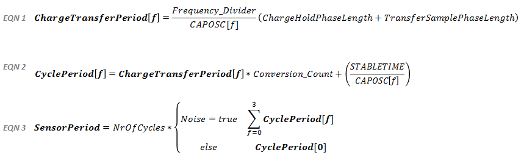

Using the Scan Time Estimator
The conversion time for a sensor may be used as a reference when optimizing a design for lowest power consumption.
As shown in the formula below, the time it takes to run the conversion is a function of how the conversion control
parameters are set up for each sensor. Decreasing the conversion count value decreases the conversion time, as does increasing the
conversion clock frequency by adjusting the frequency divider and phase lengths. The conversion time has a direct impact
on the amount of power used during the conversion (a longer conversion time implies a higher power consumption).
Knowing the overall conversion time for the user interface can be helpful in situations when the system report rate needs to be optimized. By comparing the Scan Period line on the plot to the Sensors Total line, it's possible to obtain an estimate of the amount of time available after all the sensors in the system are measured. As the System Report Rate parameter is decreased, the user interface will be measured more often, and the amount of available time will decrease. Note that the more often the user interface is measured, the higher the power consumption will be.

Use EQN1 as an input to EQN2, and EQN2 as an input to EQN3. EQN3 calculates the estimated measurement time for a given sensor, based upon the tuning parameters and device constants described to the left. EQN3 is essentially the number of cycles in a given sensor multiplied by that sensor's cycle period (the time it takes to measure one cycle, as calculated in EQN2). The only case where EQN3 deviates from the standard is if noise immunity is enabled. In that case, the charge transfer period and cyle period are calculated 4 times, once for each of the CAPOSC[f] values, and the 4 results are summed. This is because when both of those settings are checked, each cycle is measured 4 times at 4 different conversion frequencies.
The STABLETIME value is a constant and is equal to 320 cycles of CAPOSC. Use 320 in the formula.
The CAPOSC default frequency is 16 MHz. In a noise immunity application, the conversion is run at four frequencies sequentially. The four frequencies are 16 MHz, 14.7 MHz, 13.1 MHz, and 11.2 MHz.
Limitations
- The estimator only calculates the conversion time itself. It does not take into account
the time needed by the software library to process the measurement and call the user callback. This processing time
may become significant as the report rate goes up (this is equivalent to the scan period going down).
- The estimator does not take into account the amount of time needed to transmit the status of the user interface via
the selected communication interface (UART or I2C). This timing is application dependent.
- The conversion time of a self capacitance sensor goes down when that sensor is interacted with. This is not
accounted for scan time estimator.
- The conversion time of a mutual capacitance sensor goes up when that sensor is interacted with. This is not
accounted for in the scan time estimator.
- Oversampling that is set up in the application software is not accounted for in the scan time estimator.